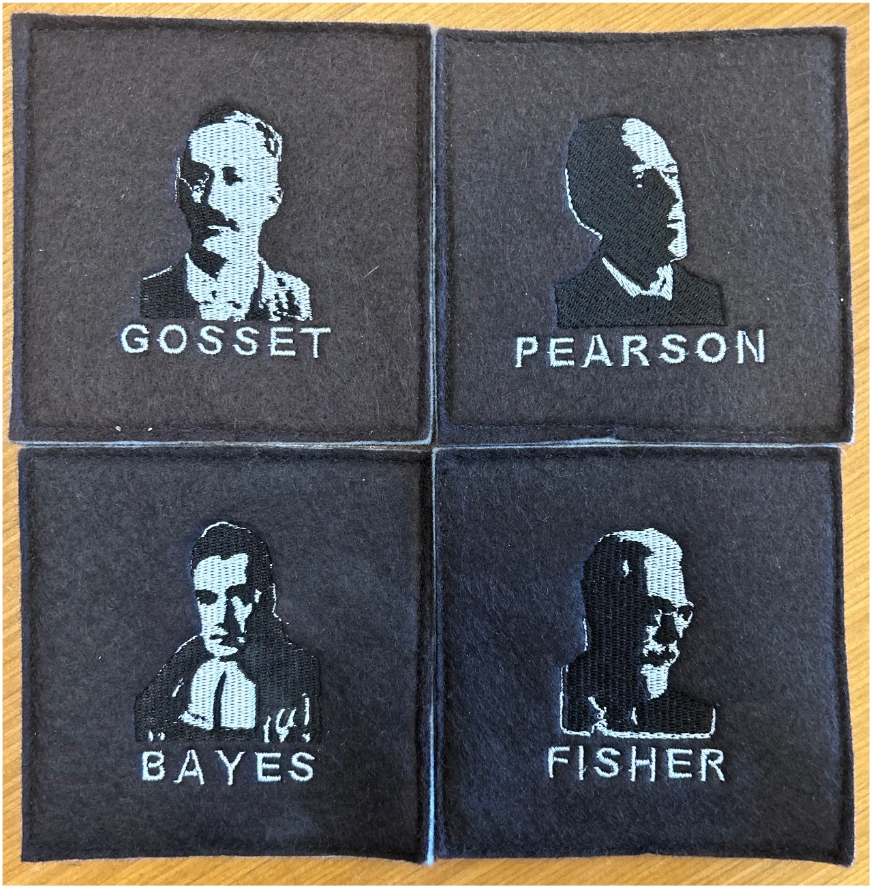
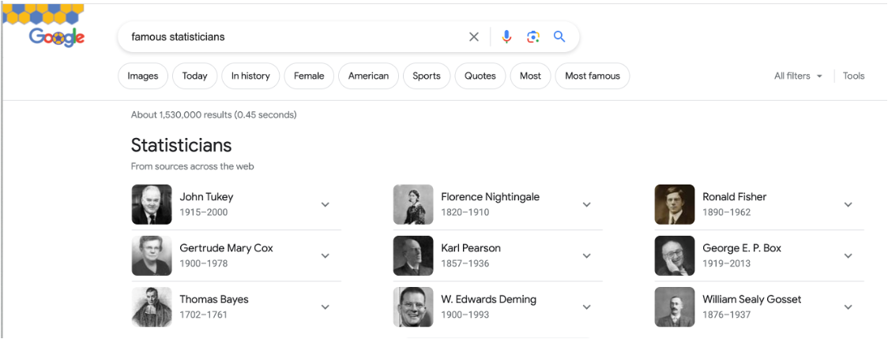
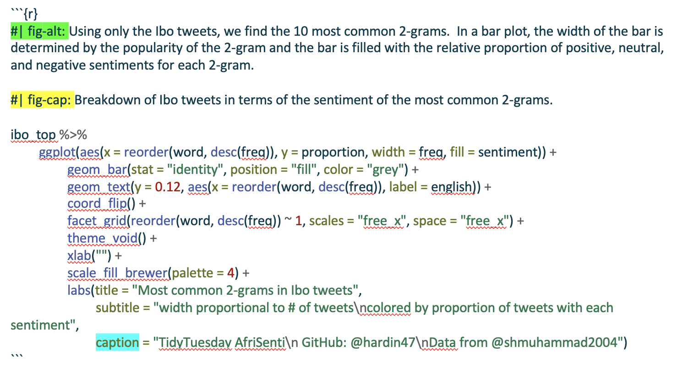
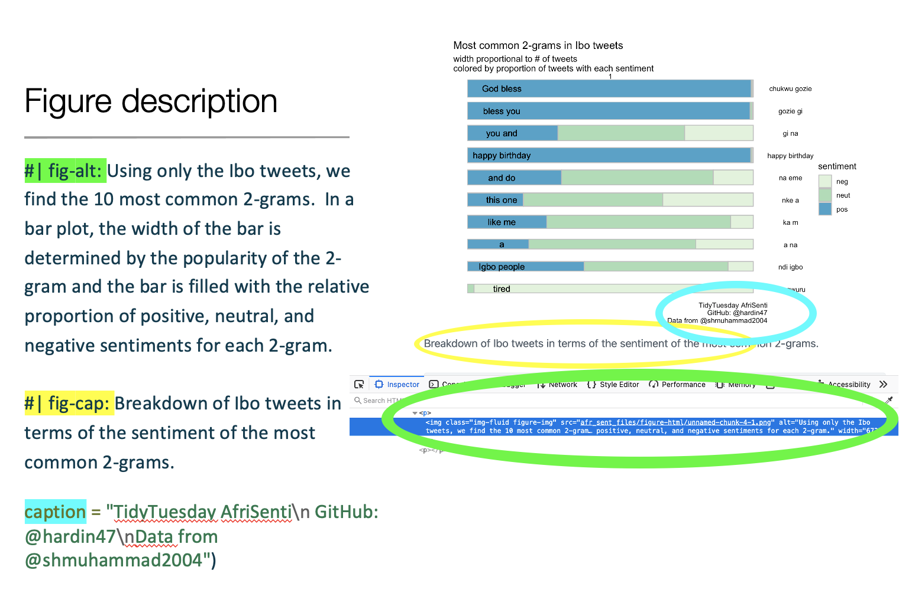
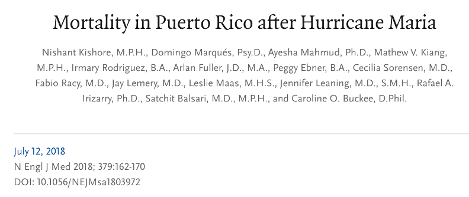
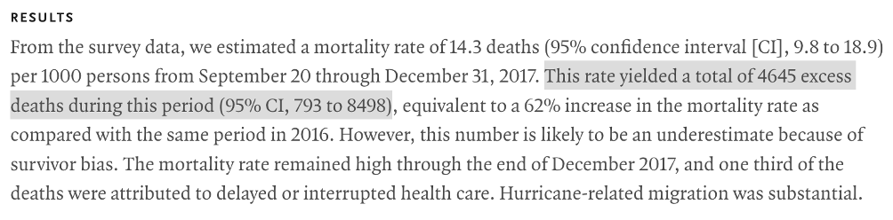

CURV - connecting, uplifting, and recognizing voices
CURV is a database which seeks to celebrate scholars who are traditionally under represented in statistics and data science. The scholars represent the diversity of undergraduate students; they are individuals who are working to make statistics more accessible; and their works leads to making the world a better place.
In most of my courses, I’ve introduced a weekly activity of “Statistician of the Day.” The scholars who I present are those traditionally underrepresented in statistics and data science. Many of them are people of color, but they also represent individuals who are pushing boundaries to make statistics and data science more accessible and inclusive, often because they themselves have navigated a world which was not accessible or not inclusive.
The database is called CURV - connecting, uplifting, and recognizing voices. You can see the source code and/or contribute to the database by exploring the CURV GitHub repo.
Representation Matters
When I think about the statisticians I encountered during my education, these four individuals, seen on my personal coaster set, come to mind.
My coasters aside, a Google search on “famous statisticians” produces a few women on the list, but the demographics of the individuals presented are remarkably homogeneous.

David Blackwell
Arguably, the most famous/influential/brilliant African American statistician is David Blackwell. Statisticians may know Blackwell from the Rao-Blackwell theorem which says that after conditioning on a sufficient statistic, the new estimator will have smaller (or equal to) mean squared error than the original estimator.
Blackwell was the 1st African American elected to the National Academies of Science and the 1st African American tenured at UC Berkeley. He was the 7th African American to receive a PhD in mathematics. In 2012, President Obama posthumously awarded Blackwell the National Medal of Science.
The majority of Blackwell’s career in statistics was spent at UC Berkeley (1954-1988). However, his start at UC Berkeley was postponed due to racism in the Department of Mathematics. Hear Blackwell describe the situation in his own words in the following video:
The full interview with David Blackwell can be found at https://www.youtube.com/watch?v=Mqpf9tw44Xw/.
Why does representation matter?
When individuals don’t feel a part of the community, their identity gets mixed up with their ability. The following xkcd comic encapsulates what can happen when individuals of the non-dominant demographic group engage with the content of the course / curriculum / minor / major.

Research indicates that many young people may be deterred from pursuing STEM fields due to prominent stereotypes regarding who best fits and belongs in such fields.1
What are some reasons that representation impacts participation in engaging in STEM?
- stereotypes about innate abilities
- stereotypes about images in the field
Who is in CURV?
- Scholars who represent the diversity of students
- Scholars working to make statistics more accessible
- Scholars using statistics to do good in the world
Liz Hare
Liz Hare is not a statistician. Indeed, she is a geneticist, working primarily in dog / animal genetics. However, as someone who is very active in the Minorities in R (MiR) Community, she works regularly with statisticians.
Liz Hare is visually impaired and has focused her work on communicating the value and ease with which statisticians and data scientists can add alt text to their reports. In the alt text, she asks us to consider and report:
- What kind of graph or chart is it?
- What variables are on the axes?
- What are the ranges of the variables?
- What does the appearance tell you about the relationships between the variables?
After presenting Liz Hare and her work to my students, I am able to teach them how to include alt text in their own work, a process which is extremely straightforward if students are using R markdown or Quarto documents.
In R, including alt text is done by providing information for the relevant R chunk. After introducing students to Liz Hare’s work, it takes very little overhead to communicate to them the ways that a graphic can be made more accessible by adding alt text to each figure.


Rafael Irizarry
Rafael Irizarry is a well known biostatistician, having done his PhD at Berkeley, worked for many years at Johns Hopkins University, and currently running a lab at Harvard as Professor of Biostatistics and at the Dana-Farber Cancer Institute as Professor of Biostatistics and Computational Biology. He has dozens of online courses through the edX platform and over a hundred publications via Google scholar.
Relevant to the CURV database however is the work that Rafael Irizarry has done in Puerto Rico. Having graduated from the University of Puerto Rico, Rafael Irizarry had a vested interest in the community that was ravaged in 2017 when Hurricane Maria, a category 5 hurricane, ravaged the island. With collaborators, Professor Irizarry performed a representative stratified sample to measure neighborhoods based on how easily accessible they were in the aftermath of the hurricane.
The original news reports months after the hurricane was that the official death report from Hurricane Maria was 64 people. Professor Irizarry and colleagues estimated that the number of excess deaths was 4645, with a 95% confidence interval of 793 to 8498.
Their work provides a myriad of topics to unpack in a statistics classroom. Some of the discussions I have had with my students include: who is doing the work to understand climate change at a global level; how is stratified sampling different from simple random samples and why can’t we always take simple random samples; and why is the CI so large?


CURV in the classroom
While you surely have creative ideas on how to use CURV in the classroom, I have mostly used it as a “statistician of the day” project. Once a week (or at every class period), I briefly introduce the scholar and present the different ways they have contributed to the field. My students have been extremely positive about the engagement reporting the following about being introduced to the scholars in the CURV database.
- inspiring
- a great way to better understand the career paths of data science
- a venue for having important conversations with peers
- highlighted diversity in the field of statistics
- made the classroom environment feel more inclusive
Contributing to CURV
Please contribute!!! Share information about the scholars you know who are aligned with the CURV goals. If you just have a name or idea, feel free to submit an issue on the CURV GitHub repo If you have a lot of information about a particular individual, I welcome pull requests. Thank you for helping the resource become a community efrort.
CURV aligned
I developed the CURV database because I didn’t know of a different resource that I could use for my “Statistician of the Day” classroom exercise. I wanted the information provided to be relevant to my students, connecting either through identity or through class content. That said, I’ve borrowed heavily from existing resources, and I appreciate the myriad existing efforts which engage students in many different ways. There are many good resources highlighting statisticians, data scientists, and mathematicians who are traditionally underrepresented. I’ve listed just a few here, I encourage you and your students to check them out!
- Mathematicians of the African Diaspora is dedicated to promoting and highlighting the contributions of members of the African diaspora to mathematics, especially contributions to current mathematical research.
- Justice, Equity, Diversity, and Inclusion Outreach Group, a community of statisticians and data scientists, is committed to communication, programming, and professional development to advance and support a society that values all people.
- Data for Black Lives movement of activists, organizers, and scientists committed to the mission of using data to create concrete and measurable change in the lives of Black people.
- We All Count Extensive guidelines for data inclusivity.
- Gayta Science Data stories / data viz / data analysis / data science on gender fluidity.
- Inclusivity Resource Building Gender and Sexuality Allyship in the Mathematics Community.
- Mathematically Gifted and Black celebrates mathematicians from the African diaspora across the mathematical sciences.
- Lathisms A vibrant, inclusive, and diverse Mathematical community where the Latinx and Hispanic culture is valued, cultivated, and celebrated.
Footnotes
Nguyen and Riegle-Crumb. Who is a scientist? The relationship between counter-stereotypical beliefs about scientists and the STEM major intentions of Black and Latinx male and female students. International Journal of STEM Education, volume 8, Article number: 28 (2021), https://doi.org/10.1186/s40594-021-00288-x↩︎